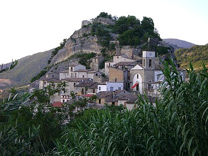

Ce que j'aime
1. Le Football
J'ai commencé a aimé le foot grace a mon père a l age de 8 ans,lui meme etant un grand fan de foot. J'ai donc commencé a regarder des match avec lui , puis par la suite tout seul et je me suis lié a un club qui est encore actuellement mon club préférer le real Madrid. Suite a ça j'ai décider de m'inscrire dans un club de foot près de chez moi. J ai continué pendant 8 ans mais malheureusement j'ai du m'arreter a cause d'une blessure au genoux Cepandant je continue tout de meme a suivre le foot avec passion.
2. les jeux video
Une autre de mes passion est le jeux video. Celle-ci a commencer a l'acquisition de ma première consode de jeux : la XBOX 360 ou j'ai commencé a donner beaucoup de mon temps ( plusieurs heures par jours). Puis pour ma rentrée en 6ème mes parents m'ont acheté la ps4 et la j'ai découvert le monde du jeux en ligne ( avec GTA5), ce qui ne m'a pas été bénéfique car j'étais devenue addict et j'ai commencé a sécher l'école. J'ai donc du me resaisir et stopper les jeux video, actuellement je j'ai repris mais cette fois-ci avec modération .
3. Mes origines
Je suis né en France à Paris dans le 14 eme arrondissement.Je suis donc de nationalité française mais pas que car mes deux parents sont d origine italienne.

Ma mère vient des Pouilles d'une ville qui s'appele Ostuni:

Mon père lui d'une petit village des abruzze qui s'appele Pietraferazzana:
4. Mon parcours scolaire
liste de mes écoles :
- Ecoles primaires
- Ecoles Velpeau (Antony)
- Colleges
- Collège LAfontaine (Antony)
- Lycées
- Lycée Descartes ( Antony)
- Lycée Jean JAurès ( Chatenay-Malabry)
- Etudes Supérieur
- IUT Créteil-Vitry (site de vitry)
5. Mon Contacts et CV
mattiachecchia068@gmail.com
CV Mattia Checchia